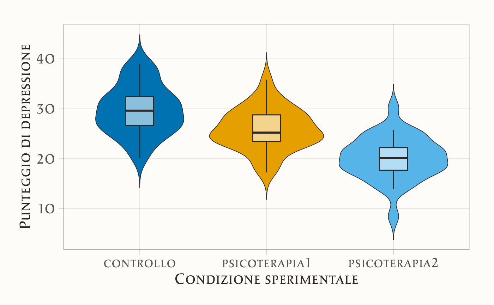
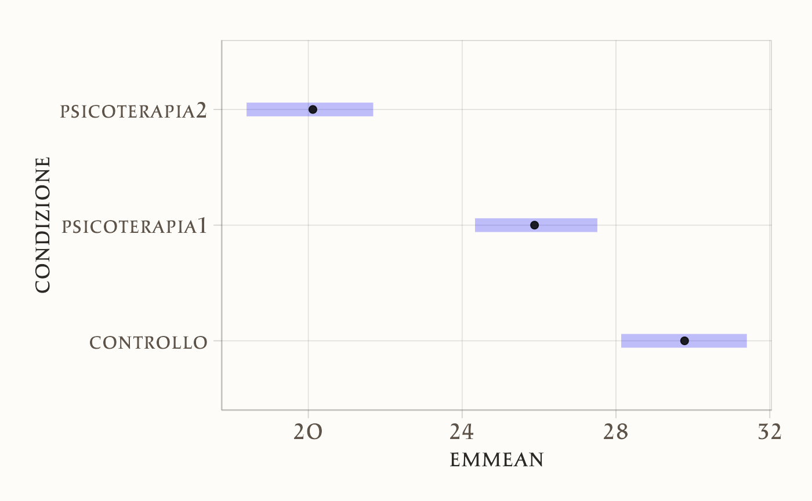

here::here("code", "_common.R") |>
source()
# Load packages
if (!requireNamespace("pacman")) install.packages("pacman")
pacman::p_load(cmdstanr, posterior, bayestestR, brms, emmeans)35 ANOVA ad una via
“The agricultural analogy is for [ANOVA] what the barnyard is to the city child—a romantic but inefficient source of fundamental concepts.”
– David Bakan, The Test of Significance in Psychological Research (1966)
Introduzione
Nei capitoli precedenti abbiamo affrontato l’inferenza su una media, il confronto tra due gruppi e la valutazione della grandezza dell’effetto. Abbiamo visto come questi problemi possano essere formulati in modo elegante all’interno del modello lineare e affrontati sia con l’approccio frequentista sia con quello bayesiano.
Un passo ulteriore, molto frequente nella ricerca psicologica, è il confronto tra più di due gruppi o condizioni. Pensiamo, ad esempio, a uno studio in cui vogliamo confrontare il livello medio di ansia in tre diversi contesti sperimentali, o a una ricerca educativa che mette a confronto più metodi di insegnamento. In questi casi, la domanda non è più soltanto se due medie differiscono, ma se esistono differenze sistematiche tra più gruppi.
Lo strumento tradizionalmente utilizzato in ambito frequentista è l’ANOVA a una via (Analysis of Variance), che permette di testare l’ipotesi nulla di uguaglianza tra tutte le medie di popolazione. Tuttavia, come per i casi precedenti, anche qui la prospettiva bayesiana offre un quadro più ricco: non ci limita a un verdetto dicotomico, ma ci restituisce la distribuzione a posteriori dei parametri, consentendo di quantificare la plausibilità di scenari diversi e di valutare l’ampiezza delle differenze.
In questo capitolo vedremo come l’ANOVA a una via possa essere interpretata come un caso particolare del modello di regressione lineare con variabile indicatrice, e come possa essere affrontata in chiave bayesiana per ottenere inferenze più trasparenti e direttamente interpretabili. In questo modo, l’ANOVA non appare come uno strumento separato, ma come parte integrante di un impianto metodologico unificato, fondato sul modello lineare.
Panoramica del capitolo
- Fare inferenza sulla media di un campione.
- Trovare le distribuzioni a posteriori usando
brms. - Verificare il modello usando i pp-check plots.
35.1 Codifica del modello con variabili dummy
Supponiamo un esperimento con tre gruppi. Per rappresentare questo fattore all’interno di un modello lineare, usiamo due variabili dummy e consideriamo il terzo gruppo come riferimento implicito. Il modello assume la forma:
\[ Y_i = \alpha + \gamma_1 D_{i1} + \gamma_2 D_{i2} + \varepsilon_i \tag{35.1}\]
dove:
- \(\alpha\) è l’intercetta del modello,
- \(\gamma_1\) e \(\gamma_2\) sono i coefficienti associati alle variabili dummy,
- \(D_{i1}\) e \(D_{i2}\) indicano l’appartenenza dell’osservazione \(i\) ai gruppi 1 e 2, rispettivamente,
- \(\varepsilon_i\) è l’errore aleatorio.
La codifica delle dummy è la seguente:
\[ \begin{array}{c|cc} \text{Gruppo} & D_{1} & D_{2} \\ \hline 1 & 1 & 0 \\ 2 & 0 & 1 \\ 3 & 0 & 0 \end{array} \tag{35.2}\]
35.1.1 Interpretazione dei parametri
Con questa codifica, possiamo esprimere le medie di ciascun gruppo come:
\[ \begin{aligned} \mu_1 &= \alpha + \gamma_1 \\ \mu_2 &= \alpha + \gamma_2 \\ \mu_3 &= \alpha \end{aligned} \]
Da cui otteniamo:
\[ \alpha = \mu_3, \quad \gamma_1 = \mu_1 - \mu_3, \quad \gamma_2 = \mu_2 - \mu_3. \]
Quindi:
- \(\alpha\): media del gruppo 3 (riferimento),
- \(\gamma_1\): quanto il gruppo 1 si discosta da \(\mu_3\),
- \(\gamma_2\): quanto il gruppo 2 si discosta da \(\mu_3\).
In un’ottica bayesiana, questi coefficienti possono essere pensati come distribuzioni: esprimono quanto crediamo che ciascuna differenza sia plausibile, date le osservazioni. Passiamo ora a una simulazione.
35.2 Simulazione
Simuliamo un esperimento con tre condizioni: controllo, psicoterapia1 e psicoterapia2. Ogni gruppo ha una media diversa ma la stessa deviazione standard. Ci interessa modellare la variabilità tra le condizioni e interpretare le differenze in modo probabilistico.
set.seed(123)
n <- 30 # numero di osservazioni per gruppo
# Medie di ciascun gruppo
mean_control <- 30
mean_psico1 <- 25
mean_psico2 <- 20
# Deviazione standard comune
sd_value <- 5
# Generazione dei dati
controllo <- rnorm(n, mean_control, sd_value)
psicoterapia1 <- rnorm(n, mean_psico1, sd_value)
psicoterapia2 <- rnorm(n, mean_psico2, sd_value)
# Creazione del data frame
df <- data.frame(
condizione = rep(c("controllo", "psicoterapia1", "psicoterapia2"), each = n),
punteggio = c(controllo, psicoterapia1, psicoterapia2)
)
df |> head()
#> condizione punteggio
#> 1 controllo 27.2
#> 2 controllo 28.8
#> 3 controllo 37.8
#> 4 controllo 30.4
#> 5 controllo 30.6
#> 6 controllo 38.635.2.1 Esplorazione iniziale
Visualizziamo le distribuzioni dei punteggi:
ggplot(df, aes(x = condizione, y = punteggio, fill = condizione)) +
geom_violin(trim = FALSE, color = css_palette$text_primary, linewidth = 0.3) +
geom_boxplot(width = 0.22, outlier.shape = NA,
color = css_palette$text_primary, fill = scales::alpha("white", 0.55)) +
labs(x = "Condizione sperimentale", y = "Punteggio di depressione") +
scale_fill_manuscript(limits = levels(df$condizione), drop = FALSE) +
theme_manuscript() +
theme(legend.position = "none")
Calcoliamo media e deviazione standard per ogni gruppo:
35.3 Modello lineare con variabili dummy
Convertiamo condizione in fattore e definiamo controllo come categoria di riferimento:
Il modello di regressione con le variabili dummy sarà:
\[ Y_i = \beta_0 + \beta_1 \cdot \text{psicoterapia1}_i + \beta_2 \cdot \text{psicoterapia2}_i + \varepsilon_i, \]
dove:
- \(\beta_0\) è la media del gruppo di controllo;
- \(\beta_1\) e \(\beta_2\) sono le differenze tra le rispettive psicoterapie e il gruppo di controllo.
35.3.1 Stima del modello
Eseguiamo una prima analisi usando il metodo di massima verosimiglianza:
fm1 <- lm(punteggio ~ condizione, data = df)summary(fm1)
#>
#> Call:
#> lm(formula = punteggio ~ condizione, data = df)
#>
#> Residuals:
#> Min 1Q Median 3Q Max
#> -11.668 -2.620 -0.183 2.681 10.128
#>
#> Coefficients:
#> Estimate Std. Error t value Pr(>|t|)
#> (Intercept) 29.764 0.819 36.33 < 2e-16
#> condizionepsicoterapia1 -3.873 1.159 -3.34 0.0012
#> condizionepsicoterapia2 -9.642 1.159 -8.32 1.1e-12
#>
#> Residual standard error: 4.49 on 87 degrees of freedom
#> Multiple R-squared: 0.446, Adjusted R-squared: 0.434
#> F-statistic: 35.1 on 2 and 87 DF, p-value: 6.75e-12Verifica delle medie e differenze tra i gruppi:
out <- tapply(df$punteggio, df$condizione, mean)
out[2] - out[1] # psicoterapia1 - controllo
#> psicoterapia1
#> -3.87
out[3] - out[1] # psicoterapia2 - controllo
#> psicoterapia2
#> -9.6435.4 Contrasti personalizzati
I contrasti ci permettono di andare oltre il test globale e formulare ipotesi teoriche mirate. Ad esempio:
- la media del gruppo controllo è diversa dalla media delle due psicoterapie?
- le due psicoterapie differiscono tra loro?
A questo fine, specifichiamo la seguente matrice dei contrasti:
my_contrasts <- matrix(c(
0.6667, 0, # controllo
-0.3333, 0.5, # psicoterapia1
-0.3333, -0.5 # psicoterapia2
), ncol = 2, byrow = TRUE)
colnames(my_contrasts) <- c("Ctrl_vs_PsicoMean", "P1_vs_P2")
rownames(my_contrasts) <- c("controllo", "psicoterapia1", "psicoterapia2")
contrasts(df$condizione) <- my_contrastsAdattiamo il modello:
mod_custom <- lm(punteggio ~ condizione, data = df)Esaminiamo i coefficienti:
summary(mod_custom)
#>
#> Call:
#> lm(formula = punteggio ~ condizione, data = df)
#>
#> Residuals:
#> Min 1Q Median 3Q Max
#> -11.668 -2.620 -0.183 2.681 10.128
#>
#> Coefficients:
#> Estimate Std. Error t value Pr(>|t|)
#> (Intercept) 25.259 0.473 53.40 < 2e-16
#> condizioneCtrl_vs_PsicoMean 6.758 1.003 6.73 1.7e-09
#> condizioneP1_vs_P2 5.770 1.159 4.98 3.2e-06
#>
#> Residual standard error: 4.49 on 87 degrees of freedom
#> Multiple R-squared: 0.446, Adjusted R-squared: 0.434
#> F-statistic: 35.1 on 2 and 87 DF, p-value: 6.75e-12Interpretazione dei coefficienti:
- Intercetta: non rappresenta più una singola media, ma una combinazione lineare dei gruppi.
-
Ctrl_vs_PsicoMean: confronta la media di
controllocon la media combinata delle due psicoterapie. - P1_vs_P2: differenza tra le due psicoterapie.
Verifica manuale:
# Controllo - media delle psicoterapie
out[1] - (out[2] + out[3]) / 2
#> controllo
#> 6.76# Psicoterapia1 - Psicoterapia2
out[2] - out[3]
#> psicoterapia1
#> 5.77
35.5 Estensione bayesiana con brms e emmeans
Usiamo ora il modello bayesiano:
mod <- brm(punteggio ~ condizione, data = df, backend = "cmdstanr")summary(mod)
#> Family: gaussian
#> Links: mu = identity; sigma = identity
#> Formula: punteggio ~ condizione
#> Data: df (Number of observations: 90)
#> Draws: 4 chains, each with iter = 2000; warmup = 1000; thin = 1;
#> total post-warmup draws = 4000
#>
#> Regression Coefficients:
#> Estimate Est.Error l-95% CI u-95% CI Rhat Bulk_ESS
#> Intercept 25.26 0.48 24.33 26.15 1.00 4321
#> condizioneCtrl_vs_PsicoMean 6.78 1.04 4.73 8.85 1.00 4260
#> condizioneP1_vs_P2 5.76 1.16 3.49 8.08 1.00 4598
#> Tail_ESS
#> Intercept 2937
#> condizioneCtrl_vs_PsicoMean 2964
#> condizioneP1_vs_P2 2785
#>
#> Further Distributional Parameters:
#> Estimate Est.Error l-95% CI u-95% CI Rhat Bulk_ESS Tail_ESS
#> sigma 4.54 0.34 3.93 5.26 1.00 4287 3279
#>
#> Draws were sampled using sample(hmc). For each parameter, Bulk_ESS
#> and Tail_ESS are effective sample size measures, and Rhat is the potential
#> scale reduction factor on split chains (at convergence, Rhat = 1).Le medie marginali e i confronti possono essere ottenuti con il pacchetto emmeans:
em <- emmeans(mod, specs = "condizione")
em
#> condizione emmean lower.HPD upper.HPD
#> controllo 29.8 28.1 31.4
#> psicoterapia1 25.9 24.3 27.5
#> psicoterapia2 20.1 18.4 21.7
#>
#> Point estimate displayed: median
#> HPD interval probability: 0.95Confronti tra gruppi:
pairs(em) # confronti a coppie
#> contrast estimate lower.HPD upper.HPD
#> controllo - psicoterapia1 3.90 1.70 6.21
#> controllo - psicoterapia2 9.65 7.31 12.03
#> psicoterapia1 - psicoterapia2 5.76 3.57 8.14
#>
#> Point estimate displayed: median
#> HPD interval probability: 0.95Contrasti personalizzati:
contrast(em, method = my_list)
#> contrast estimate lower.HPD upper.HPD
#> Ctrl_vs_PsicoMean 6.77 4.77 8.88
#> P1_vs_P2 5.76 3.57 8.14
#>
#> Point estimate displayed: median
#> HPD interval probability: 0.95# Visualizzazione
plot(em)
Riflessioni conclusive
In questo capitolo abbiamo visto come l’ANOVA a una via non sia un metodo a sé stante, ma un caso particolare del modello lineare. Attraverso l’uso di variabili indicatrici, infatti, il confronto tra più gruppi può essere formulato come un’estensione naturale della regressione, in cui ciascuna media di gruppo è rappresentata da un parametro del modello.
L’approccio frequentista tradizionale all’ANOVA si concentra sul test dell’ipotesi nulla di uguaglianza tra le medie, producendo un singolo indice sintetico (la statistica \(F\)). L’approccio bayesiano, invece, ci permette di andare oltre: possiamo stimare la distribuzione a posteriori delle differenze tra gruppi, valutare la probabilità che certe medie siano più alte o più basse di altre, e soprattutto ragionare sulla rilevanza pratica delle differenze osservate.
L’insegnamento più importante è che regressione e ANOVA non sono strumenti separati, ma due volti dello stesso impianto metodologico. Il modello lineare costituisce il quadro unificante che ci consente di descrivere, stimare e interpretare relazioni tra variabili, sia quantitative sia categoriali, con la stessa logica di base.
Con questo capitolo si chiude la sezione dedicata alla regressione. Abbiamo percorso un itinerario che ci ha portato dalla regressione bivariata alla regressione verso la media, dal confronto tra due gruppi all’ANOVA, passando per l’interpretazione bayesiana dei modelli e per la loro implementazione in Stan. Il filo conduttore è stato duplice: da un lato, la consapevolezza che i modelli lineari sono strumenti fenomenologici, utili per descrivere le associazioni ma non per spiegare i meccanismi sottostanti; dall’altro, la convinzione che l’approccio bayesiano renda queste descrizioni più trasparenti, interpretabili e coerenti con il modo in cui la psicologia scientifica dovrebbe affrontare l’incertezza.
Bibliografia
McElreath, R. (2020). Statistical rethinking: A Bayesian course with examples in R and Stan (2nd Edition). CRC Press.